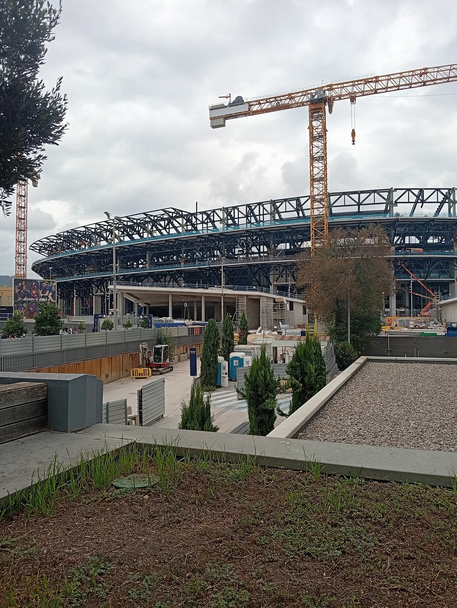
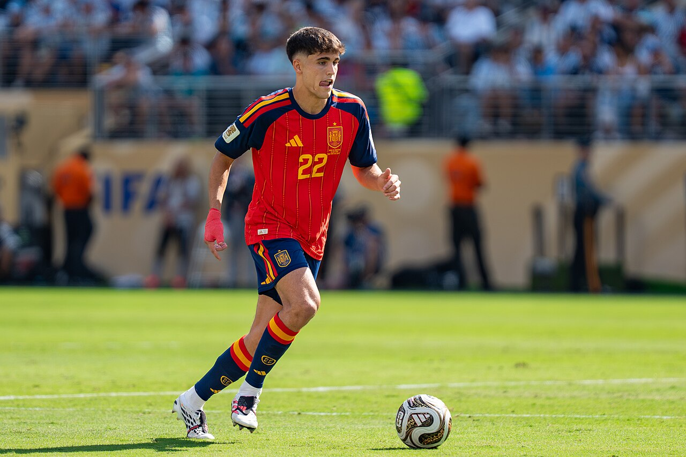
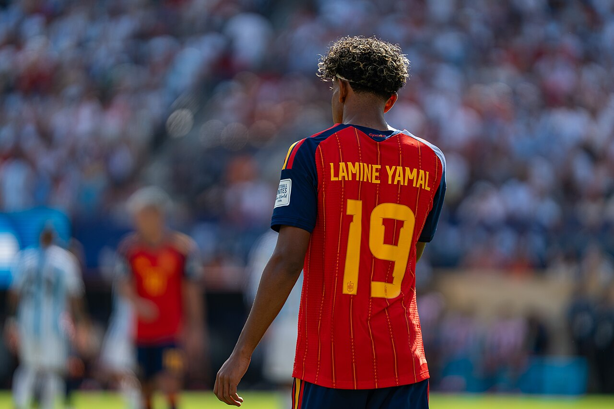
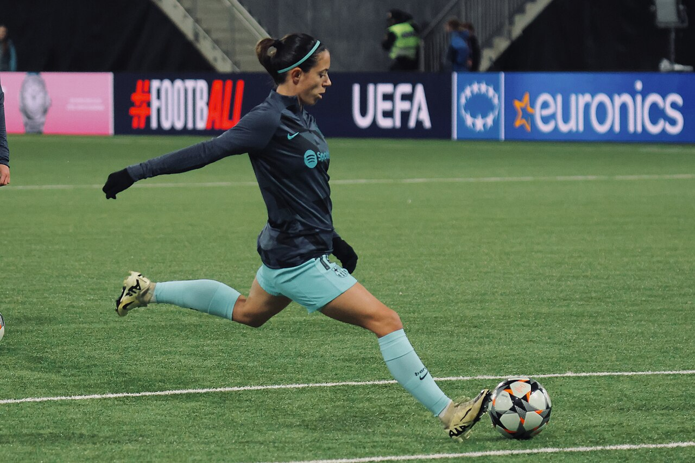

Audio diario de 5 a 7 minutos
El resumen completo del día narrado con voz clara. Lo escuchas mientras haces otra cosa: en el trabajo, en el bus o en casa.
Boletín diario del FC Barcelona
De 5 a 7 minutos de audio con todo lo del Barça: noticias verificadas, rumores como rumores y la previa de cada partido. Cada día a las 19:00, directo en tu correo.
¡Listo! Ya eres parte de El Muse Cule.
Tu primer episodio llega hoy a las 19:00. Revisa tu correo y la carpeta de spam por si acaso.
Gratis 30 días · Sin spam · Cancela cuando quieras

Qué incluye
Un solo correo al día con lo que de verdad importa. Nada de rellenar con noticias viejas.
El resumen completo del día narrado con voz clara. Lo escuchas mientras haces otra cosa: en el trabajo, en el bus o en casa.
Cada noticia se contrasta en prensa seria y se citan las fuentes al final del correo. Lo que no está confirmado, no se vende como hecho.
Fichajes, salidas y mercado: te contamos lo que se dice y quién lo dice, sin disfrazarlo de noticia cerrada.
Un correo al día, a las 19:00. Sin publicidad de terceros, sin cadenas y sin vender tu correo a nadie.
Escucha un episodio
Muestra de audio · Episodio del lunes 9 de noviembre de 2026. Toca play en cualquiera de las tarjetas.

HoyLunes 9 de noviembre · 6 min
El central arrasa en las votaciones del Golden Boy y entra en el once ideal mundial de FIFPro. Además: la FIFA visita el Camp Nou.

AyerDomingo 8 de noviembre · 7 min
Doblete de Fermín en su partido 100 en Liga y victoria 1-2 ante el Atlético. Lamine asiste y el Barça se va al parón como líder.

Próximo · Jue 12 novJueves 12 de noviembre · 6 min
El Barça Femenino recibe al Arsenal en el Camp Nou, la reedición de la final de la Champions del año pasado.
Quiero escucharloCómo funciona
Escribe tu correo arriba y listo. No hace falta instalar ninguna app ni crear cuentas raras.
El correo trae el botón Escuchar, el resumen escrito y las fuentes de cada noticia.
Se escucha en el navegador del teléfono o la computadora. También puedes descargar el audio.
Precio
Sin tarjeta para probar. Sin permanencia. Cancela cuando quieras.
Gratis 30 días
Después, $2,99 / mes
El cobro del plan de pago se activa al terminar el periodo gratis. Te avisamos antes por correo.
Preguntas frecuentes
Un boletín diario de noticias del FC Barcelona en audio, enviado por correo. Cada día a las 19:00 recibes un episodio de 5 a 7 minutos con todo lo del Barça: resultados, fichajes, lesionados, cantera y femenino.
El correo trae un botón Escuchar que abre el reproductor en tu navegador. No hace falta instalar ninguna app ni descargar nada, aunque también puedes descargar el MP3 si quieres guardarlo.
Recibes un correo breve avisando que no hay novedades. No rellenamos con humo: si no hay nada que contar, lo decimos y listo.
Los primeros 30 días son gratis. Después, el plan cuesta $2,99 al mes, con 7 días gratis al activarlo. Puedes cancelar cuando quieras con un enlace en cada correo, sin permanencia ni preguntas.
No. El Muse Cule es un proyecto independiente de aficionados, sin afiliación ni respaldo del FC Barcelona. Las noticias se narran con voz propia y siempre se citan las fuentes.
Únete gratis y escucha hoy mismo el episodio del día.
Quiero escucharlo gratis